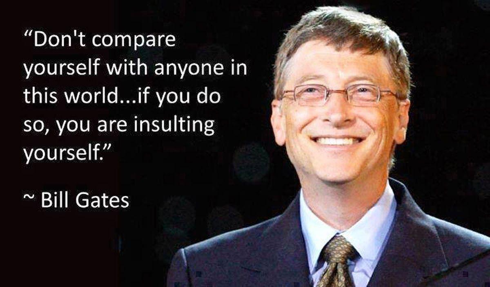

Bill Gates

AMERICAN COMPUTER PROGRAMMER, BUSINESSMAN, AND PHILANTHROPIST
Here's a time line of Bill Gates's life:
- 1955 - Bill Gates was born on October 28.
- 1976 - Bill Gates cofounded Microsoft Corporation,the world’s largest personal-computer software company.
- - Bill Gates attended Harvard University. However, he dropped out in his junior year to found Microsoft with his friend Paul Allen.
- - Bill Gates founded the software company Microsoft Corporation with his friend Paul Allen. He also cofounded the Bill & Melinda Gates Foundation to fund global health and development programs.
- 1992 - Bill Gates is married to Melinda French.
- 1990 - Bill Gates Windows Windows-95 In Microsoft released its first version of Windows
“The first rule of any technology used in a business is that automation applied to an efficient operation will magnify the efficiency. The second is that automation applied to an inefficient operation will magnify the inefficiency."
--Bill Gates